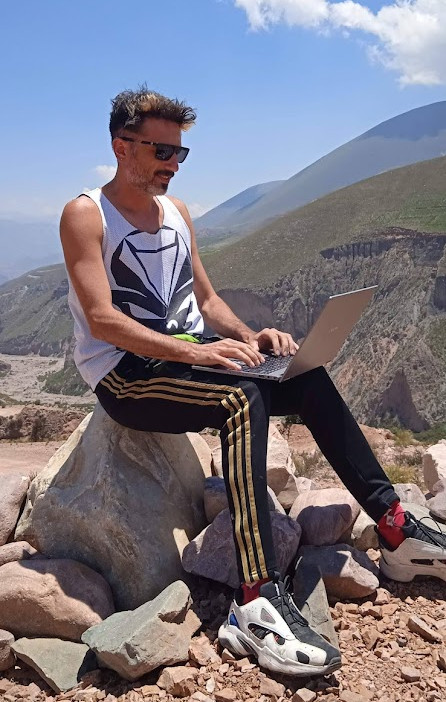

Gastón Ramos
Full Stack Engineer
Ruby on Rails developer since 2004
For more than twenty years I've been building production Ruby on Rails applications. I enjoy working on product teams, solving complex engineering problems, and continuously improving my craft.
Selected work · GitHub · LinkedIn
Open Source & Community
Earlier in my career, I contributed to Ruby on Rails, Ruby, Rubinius, and Rubyspec, and Debian. I also created several Ruby gems, founded the Ruby community in Santa Fe, and gave talks about Ruby, Rails, testing, and Extreme Programming.
Writing
I am also the author of a blog where I share reflections and experiences since 2007, addressing a wide range of subjects.
Music
But my life is not confined to the digital world. I am a musician with four albums and several singles produced by myself. I play keyboards, guitar, bass, and Akai MPC.
Calisthenics & BJJ
I practice Calisthenics and Brazilian Jiu Jitsu, also enjoy exploring rivers through kayaking. Furthermore, I dedicate myself to my garden as a relaxing hobby.
Minimalism & Reading
I embrace minimalism as a philosophy centered on simplicity, clarity, and living with intention. Reading is an important part of that journey, and I often find inspiration in authors such as Leo Babauta, Tim Ferriss, and Mihaly Csikszentmihalyi. Books like "Zen Habits" and "Flow" have influenced how I think about work, attention, habits, and a meaningful life.
Father
Above all, I am a proud father. My aim is to live a minimalist life, seeking the essence in everything I do.

If you want to contact me, email ramos.gaston@gmail.com.